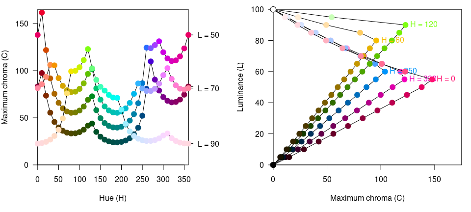

Color Manipulation and Utilities
manipulation_utilities.RmdOverview
The colorspace package provides several color manipulation utilities that are useful for creating, assessing, or transforming color palettes, namely:
-
desaturate(): Desaturate colors by chroma removal in HCL space. -
darken()andlighten(): Algorithmically lighten or darken colors in HCL and/or HLS space. -
max_chroma(): Compute maximum chroma for given hue and luminance in HCL space. -
mixcolor(): Additively mix two colors by computing their convex combination.
Desaturation in HCL space
Desaturation should map a given color to the gray with the same “brightness”. In principle, any perceptually-based color model (HCL, HLS, HSV, …) could be employed for this but HCL works particularly well because its coordinates capture the perceptual properties better than most other color models.
The desaturate() function converts any given hex color code or named R color to the corresponding HCL coordinates and sets the chroma to zero. Thus, only the luminance matters which captures the “brightness” mentioned above. Finally, the resulting HCL coordinates are transformed back to hex color codes for use in R.
For illustration, a few simple examples are presented below. More examples in the context of palettes for statistical graphics are discussed along with the color vision deficiency article.
First, desaturate() is used to desaturate a vector of R color names:
## [1] "#FFFFFF" "#B8B8B8" "#4C4C4C" "#000000"Notice that the hex codes corresponding to three coordinates in sRGB space are always the same, indicating gray colors.
Analogously, hex color codes can also be transformed - in this case RGB rainbow colors from the base R function rainbow():
## [1] "#FF0000FF" "#00FF00FF" "#0000FFFF"## [1] "#7F7F7FFF" "#DCDCDCFF" "#4C4C4CFF"Already this simple example shows that the three RGB rainbow colors have very different grayscale levels. This can be brought even more clearly when using a full color wheel (of colors with hues in [0, 360] degrees). While the RGB rainbow() is very unbalanced the HCL rainbow_hcl() (or also qualitative_hcl()) is (by design) balanced with respect to luminance.
wheel <- function(col, radius = 1, ...)
pie(rep(1, length(col)), col = col, radius = radius, ...)
par(mar = rep(0.5, 4), mfrow = c(2, 2))
wheel(rainbow(8))
wheel(desaturate(rainbow(8)))
wheel(rainbow_hcl(8))
wheel(desaturate(rainbow_hcl(8)))
Lighten or darken colors
In principle, a similar approach for lightening and darkening colors can be employed as for desaturation above. The colors can simply be transformed to HCL space and then the luminance can either be decreased (turning the color darker) or increased (turning it lighter) while preserving the hue and chroma coordinates.
This strategy typically works well for lightening colors, although in some situations the result can be rather colorful. Conversely, when darkening rather light colors with little chroma, this can result in rather gray colors.
In these situations, an alternative might be to apply the analogous strategy in HLS space which is frequently used in HTML style sheets. However, this strategy may also yield colors that are either too gray or too colorful. A compromise that sometimes works well is to adjust the luminance coordinate in HCL space but to take the chroma coordinate corresponding the HLS transformation.
We have found that typically the HCL-based transformation performs best for lightening colors and this is hence the default in lighten(). For darkening colors, the combined strategy often works best and is hence the default in darken(). In either case it is recommended to try the other available strategies in case the default yields unexpected results.
Regardless of the chosen color space, the adjustment of the L component can occur by two methods, relative (the default) and absolute. For example for darkening these either use L - 100 * amount (absolute) or L * (1 - amount) (relative). See lighten() and darken() for more details.
For illustration a qualitative palette (Okabe-Ito) is transformed by two levels of both lightening and darkening, respectively.
Maximum chroma for given hue and luminance
As the possible combinations of chroma and luminance in HCL space depend on hue, it is not obvious which trajectories through HCL space are possible prior to trying a specific HCL coordinate by calling polarLUV(). To avoid having to fix up the color upon conversion to RGB hex() color codes, the max_chroma() function computes (approximately) the maximum chroma possible.
For illustration we show that for given luminance (here: L = 50) the maximum chroma varies substantially with hue:
## [1] 137.96 59.99 69.06 39.81 65.45 119.54 137.96Similarly, maximum chroma also varies substantially across luminance values for a given hue (here: H = 120, green):
## [1] 0.00 28.04 55.35 82.79 110.28 0.00In the plots below more combinations are visualized: In the left panel for maximum chroma across hues given luminance and in the right panel with increasing luminance given hue.
